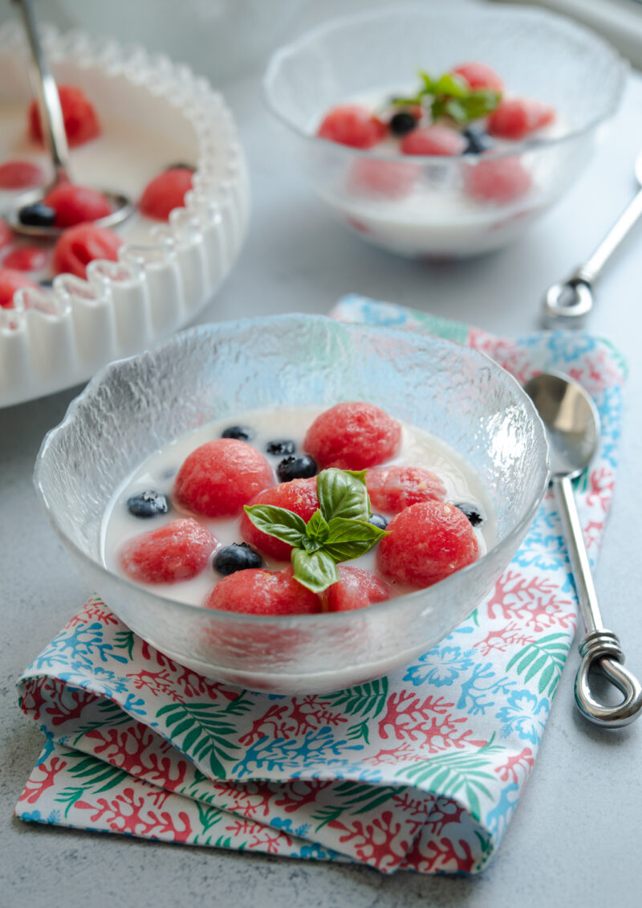

Hwachae

Description
Hwachae, or specifically subak-hwachae, is
also known as Korean watermelon punch. It's a
refreshing summer fruit punch made with watermelon,
fruit cocktail, lemon-lime soda, and milk. It's super
easy to make and is children and family-friendly, which
makes it great for get-togethers!
Ingredients
- Seedless Watermelon
- Milk
- Lemon-lime soda
- Sweet condensed milk, honey or sugar
- Ice cubes: optional
Steps
- Mix milk and sweet condensed milk. You can use honey or sugar
instead (Adjust the amount according to your preference).
- Add the soda and mix well.
- Combine with the watermelon (and other fruits if using)
in a large mixing bowl.
THIS RECIPE WAS COPIED FROM BEYOND KIMCHEE'S SITE